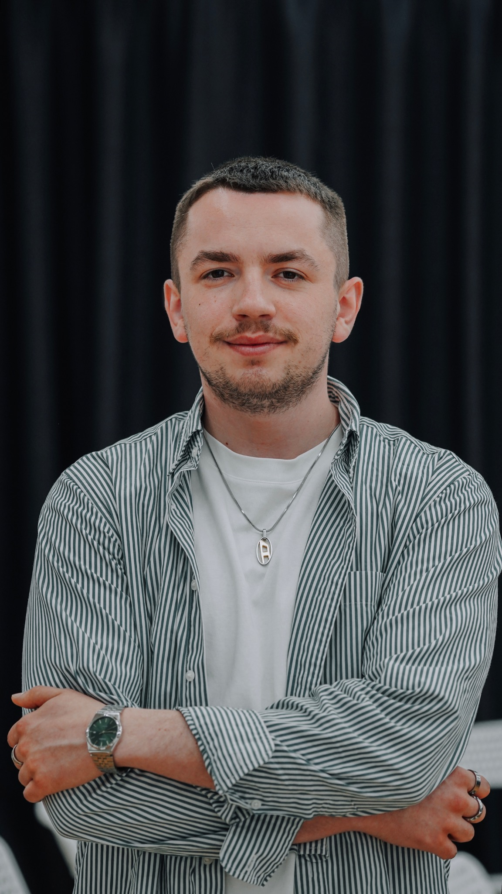
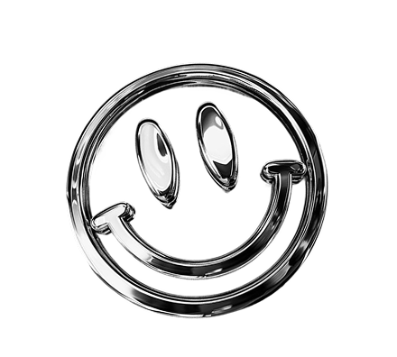
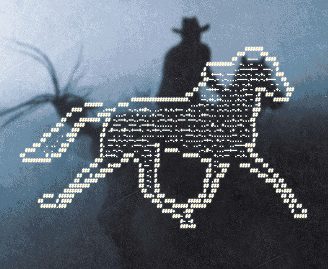
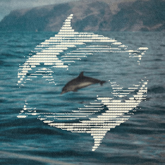
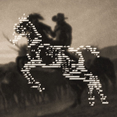
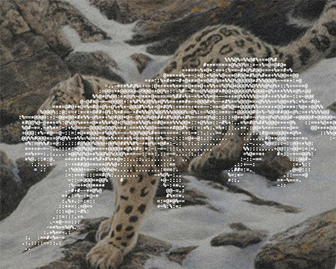
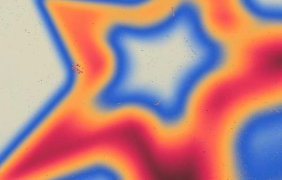
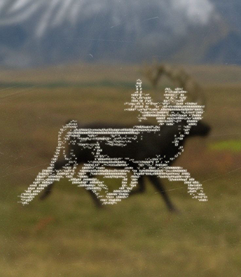

Mission Possible
Head of Marketing & CommunicationsВідповідаю за маркетинг і комунікації української startup-екосистеми та акселератора для tech-фаундерів.
Мене звати Андрій. Я працюю з маркетингом і комунікаціями: будую бренди, комʼюніті та персональні бренди людей, яким є що сказати.
Зараз — Head of Marketing & Communications у Mission Possible. Паралельно консультую, викладаю, менторю і запускаю власні штуки.
Подивитися, що я роблю ↓

Всю свою карʼєру я працюю в маркетингу та комунікаціях.
Встиг попрацювати в агенції, IT, фонді, GovTech, освіті та стартап-екосистемі. Був у команді Фонду Сергія Притули, Develux, Мрії / Мінцифри. Три роки викладаю у Projector.
Зараз очолюю маркетинг і комунікації Mission Possible.
А ще паралельно будую власні проєкти навколо речей, які люблю найбільше: маркетингу, людей, карʼєри, контенту та інтернету.

Відповідаю за маркетинг і комунікації української startup-екосистеми та акселератора для tech-фаундерів.
1 рік — communications manager. 1,5 року — Head of Digital Сергія Притули. Паралельно 2,5 роки очолював комунікації Центру готовності цивільних у Києві та Україні.
Працював із комунікаціями державного освітнього застосунку Мрія.
1,5 року маркетингу в IT.
Три роки викладаю SMM і маркетинг. Через мої курси, лекції та менторство пройшли 100+ людей.
Два роки агенційного життя. Серед клієнтів — UDP, Wirex R&D та Ajax.
Три штуки, які я будую не тому, що «треба для personal brand».
Двомісячна програма, де я працюю з людьми над позиціонуванням, контентом, нетворком і LinkedIn як карʼєрним активом.
Зараз триває другий потік.
Хочу в наступний ↗
Подкаст про маркетинг та людей у ньому. Робимо його разом із другом Максимом. Нам рік, позаду два сезони, попереду — третій.
Говоримо з людьми, які роблять маркетинг, комунікації та бізнес.
Дивитися на YouTube ↗
Три роки тому я створив канал, щоб допомагати друзям-роботодавцям знаходити друзів-спеціалістів. Тепер нас уже 5000.
Вакансії, карʼєра, маркетинг, LinkedIn, кейси, факапи, люди, івенти й хороші штуки з інтернету.
Заслеїти карʼєру ↗

Хейт — це початок на публічність.
Personal brand — це не коли CEO почав писати пости.
Комʼюніті не будується контент-планом.
LinkedIn потрібен не тільки тоді, коли ви шукаєте роботу.
Особистий бренд — твій найбільший актив.
Не агенція. Не «повний цикл». Не 17 пакетів послуг.
Є кілька форматів.
60–90 хвилин на конкретний запит.
Маркетинг, комунікації, позиціонування, контент, запуск, LinkedIn, personal brand або карʼєра. Ви приходите із запитаннями. Я приходжу не тільки з відповідями, а й з новими запитаннями.
Записатися ↗Для команд і брендів, яким потрібно зібрати докупи маркетинг, позиціонування, комунікації або контент.
До зустрічі я занурююсь у контекст. На зустрічі — розбираємо. Після — у вас залишається зрозумілий напрямок, а не Miro на 700 стікерів.
Обговорити ↗Працюю з маркетологами, комунікаційниками та іншими спеціалістами над карʼєрою, позиціонуванням, LinkedIn, personal brand і конкретними робочими задачами.
Без універсальної програми. Бо універсальних карʼєр теж немає.
Хочу на менторство ↗Для команд, компаній, шкіл, конференцій та інших місць, де збираються люди й слухають інших людей.
Можу прийти з лекцією, воркшопом, Q&A або корпоративним навчанням.
Запросити ↗Іноді заходжу в окремі маркетингові та комунікаційні проєкти як консультант або стратег.
Якщо задача цікава — розкажіть.
Розповісти про проєкт ↗Виступаю на конференціях, корпоративних подіях, у школах, комʼюніті та подкастах.
Запросити виступити ↗
Консультація, проєкт, лекція, подкаст, колаба або просто хороша причина написати.
Відповідаю сам. Це поки що не делегував.